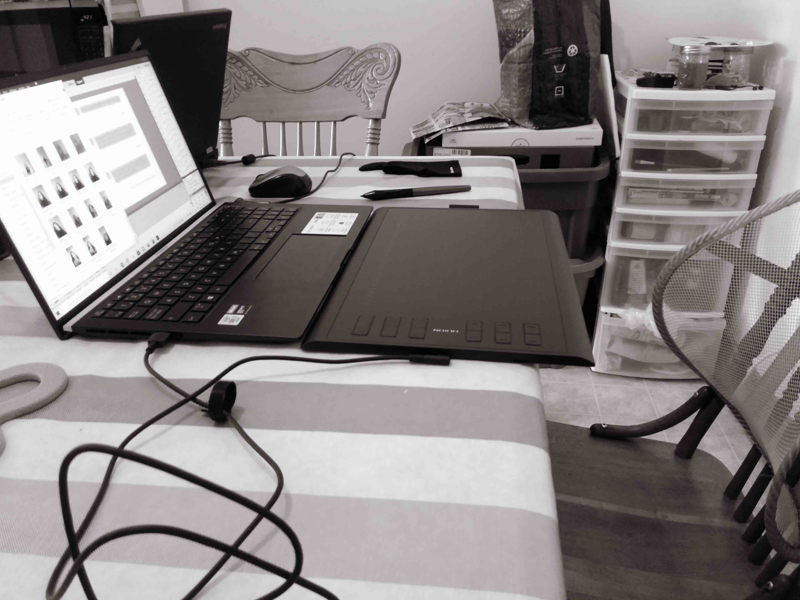

Bibliographie de l'artiste

Après des études collégiales en arts visuels, Jade Apestiguy complète un baccalauréat en arts dramatiques avec une spécialisation en scénographie à l’École supérieure de théâtre de l’UQAM. Elle se spécialise en conception vidéo pour le théâtre et pratique la peinture, le dessin, et le traitement sonore. Utilisant les codes et les stratégies propres aux différents genres d’horreur qu’on retrouve au cinéma, dans la littérature ou dans les jeux vidéo, son travail explore les perturbations émotionnelles, l’inconfort et le malaise pour mieux amener le spectateur à réfléchir à certains enjeux sociaux.
Travail sur le projet
Kodeak est un site web interactif qui s’inspire de la structure des médias sociaux et des expériences qui y sont vécues pour traiter du pouvoir de l’image. À travers une mise en scène qui prend la forme d’une narration organisée en différents actes, l’histoire met de l’avant une protagoniste à l’image de l’auteure, opposée à une antagoniste à l’identité abstraite. Par les images qu’il propose, Kodeak joue sur l’ambivalence entre désir et répulsion. Le spectateur, en proie à sa pulsion scopique, se retrouvera peut-être dans une tension psychologique où il assistera à la décadence du personnage principal.
